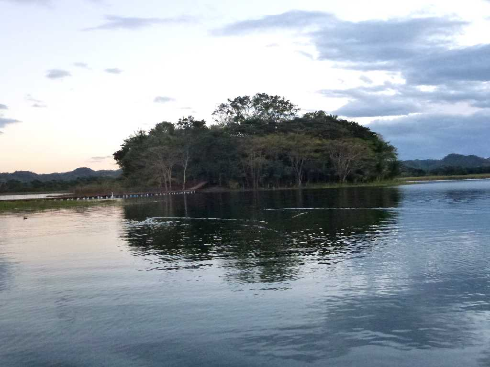
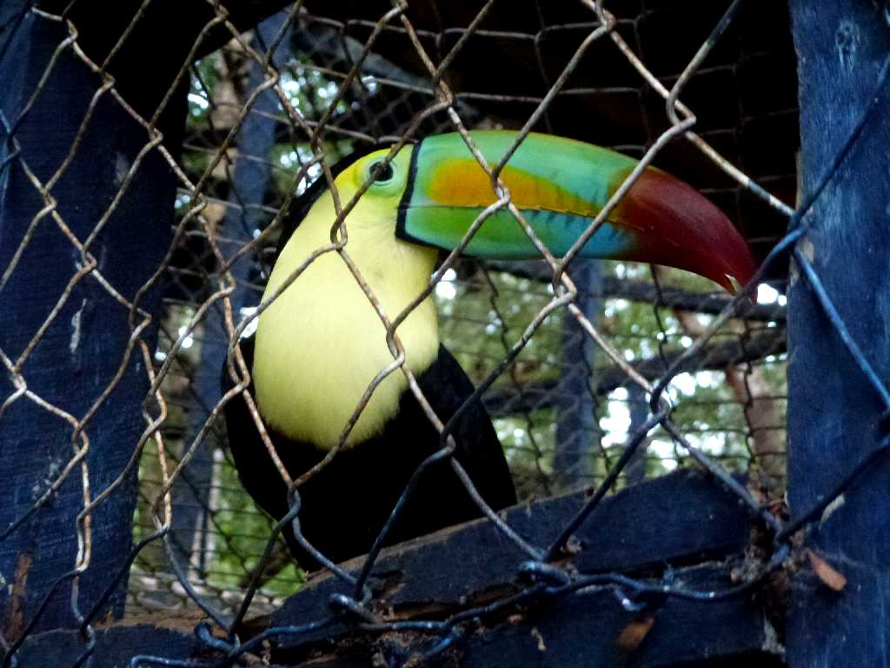
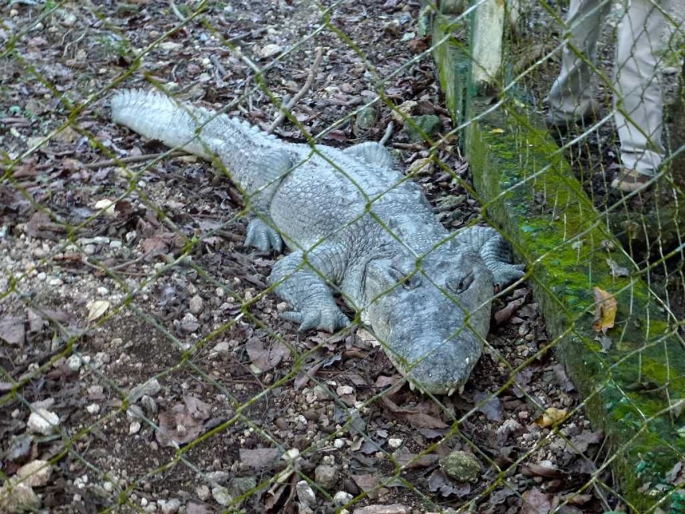

Petencito Zoo
ペテンシート自然動物園

January 28 2013 Ramphastos Sulfuratus Petencito Zoo
キツツキ目オオハシ科の美しいサンショクキムネオオハシは鮮やかな色彩とユニークな姿でベリーズの国鳥となっている

Crocodylus Moreletii Petencito Zoo
ワニ目クロコダイル科の中央アメリカ東海岸の淡水域に生息するワニ